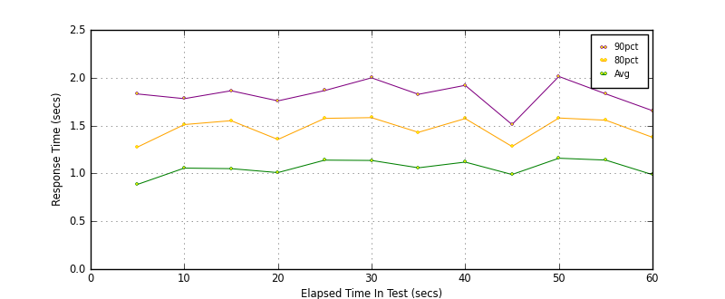
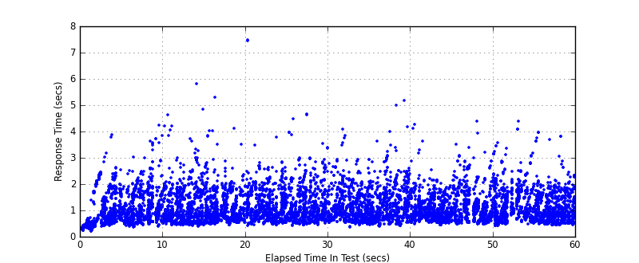
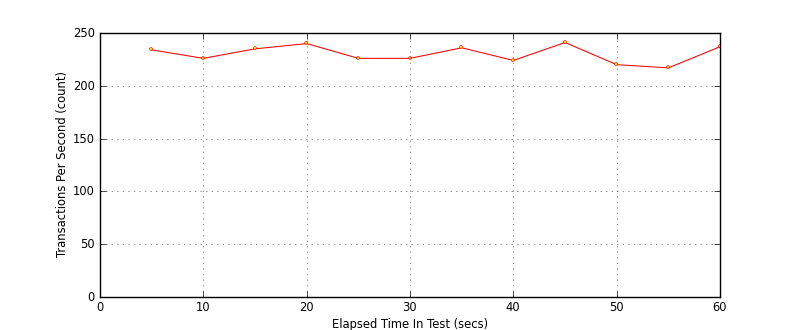

Performance Results Report
Summary
transactions: 14087
errors: 0
run time: 60 secs
rampup: 0 secs
test start: 2017-05-25 09:14:11
test finish: 2017-05-25 09:15:11
time-series interval: 5 secs
workload configuration:
| group name | threads | script name |
|---|
| user_group-21 | 10 | redis_stress.py |
| user_group-20 | 10 | redis_stress.py |
| user_group-23 | 10 | redis_stress.py |
| user_group-22 | 10 | redis_stress.py |
| user_group-25 | 10 | redis_stress.py |
| user_group-24 | 10 | redis_stress.py |
| user_group-2 | 10 | redis_stress.py |
| user_group-3 | 10 | redis_stress.py |
| user_group-1 | 10 | redis_stress.py |
| user_group-6 | 10 | redis_stress.py |
| user_group-7 | 10 | redis_stress.py |
| user_group-4 | 10 | redis_stress.py |
| user_group-5 | 10 | redis_stress.py |
| user_group-8 | 10 | redis_stress.py |
| user_group-9 | 10 | redis_stress.py |
| user_group-10 | 10 | redis_stress.py |
| user_group-11 | 10 | redis_stress.py |
| user_group-12 | 10 | redis_stress.py |
| user_group-13 | 10 | redis_stress.py |
| user_group-14 | 10 | redis_stress.py |
| user_group-15 | 10 | redis_stress.py |
| user_group-16 | 10 | redis_stress.py |
| user_group-17 | 10 | redis_stress.py |
| user_group-18 | 10 | redis_stress.py |
| user_group-19 | 10 | redis_stress.py |
All Transactions
Transaction Response Summary (secs)
| count | min | avg | 80pct | 90pct | 95pct | max | stdev |
|---|
| 14087 | 0.199 | 1.058 | 1.494 | 1.809 | 2.097 | 7.456 | 0.558 |
Interval Details (secs)
| interval | count | rate | min | avg | 80pct | 90pct | 95pct | max | stdev |
|---|
| 1 | 1172 | 234.40 | 0.199 | 0.885 | 1.275 | 1.830 | 2.160 | 3.851 | 0.576 |
| 2 | 1134 | 226.80 | 0.363 | 1.056 | 1.511 | 1.781 | 2.028 | 4.214 | 0.555 |
| 3 | 1178 | 235.60 | 0.393 | 1.050 | 1.551 | 1.864 | 2.086 | 5.803 | 0.618 |
| 4 | 1200 | 240.00 | 0.435 | 1.009 | 1.355 | 1.758 | 1.908 | 5.302 | 0.511 |
| 5 | 1130 | 226.00 | 0.418 | 1.139 | 1.575 | 1.866 | 2.078 | 7.456 | 0.578 |
| 6 | 1130 | 226.00 | 0.420 | 1.136 | 1.583 | 1.999 | 2.282 | 4.639 | 0.608 |
| 7 | 1184 | 236.80 | 0.358 | 1.059 | 1.429 | 1.827 | 2.066 | 4.071 | 0.524 |
| 8 | 1121 | 224.20 | 0.389 | 1.119 | 1.573 | 1.921 | 2.248 | 5.152 | 0.595 |
| 9 | 1208 | 241.60 | 0.437 | 0.989 | 1.281 | 1.511 | 1.726 | 4.256 | 0.401 |
| 10 | 1104 | 220.80 | 0.456 | 1.159 | 1.579 | 2.013 | 2.359 | 4.374 | 0.587 |
| 11 | 1087 | 217.40 | 0.399 | 1.139 | 1.556 | 1.832 | 2.156 | 4.372 | 0.567 |
| 12 | 1189 | 237.80 | 0.424 | 0.987 | 1.378 | 1.656 | 1.880 | 3.958 | 0.492 |
Graphs
Response Time: 5 sec time-series

Response Time: raw data (all points)

Throughput: 5 sec time-series
